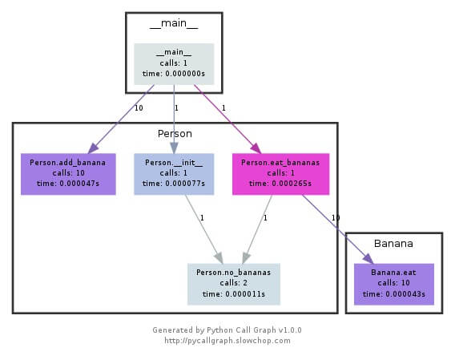
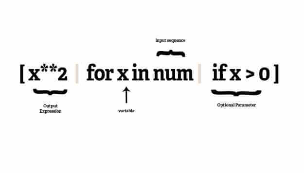
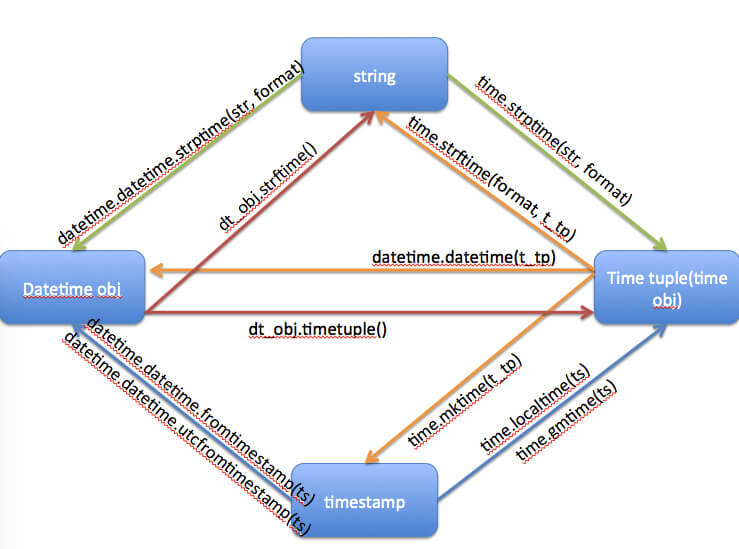

Python 技巧总结
2015-03-17
1. 枚举 - enumerate 可以有参数哦
之前我们这样操作：
i = 0
for item in iterable:
print i, item
i += 1现在我们这样操作：
for i, item in enumerate(iterable):
print i, itemenumerate函数还可以接收第二个参数。就像下面这样：
>>> list(enumerate('abc'))
[(0, 'a'), (1, 'b'), (2, 'c')]
>>> list(enumerate('abc', 1))
[(1, 'a'), (2, 'b'), (3, 'c')]2. 字典/集合 生成
你也许知道如何进行列表解析，但是可能不知道字典/集合生成。它们简单易用且高效。就像下面这个例子：
my_dict = {i: i * i for i in xrange(100)}
my_set = {i * 15 for i in xrange(100)}
# There is only a difference of ':' in both
# 两者的区别在于字典推导中有冒号3. 强制浮点除法
from __future__ import division
result = 1/2
# print(result)
# 0.54. 对Python表达式求值
我们都知道eval函数，但是我们知道literal_eval函数么？也许很多人都不知道吧。可以用这种操作：
import ast
my_list = ast.literal_eval(expr) 来代替以下这种操作：
expr = "[1, 2, 3]"
my_list = eval(expr)我相信对于大多数人来说这种形式是第一次看见，但是实际上这个在Python中已经存在很长时间了。
5. 字符串/数列 逆序
你可以用以下方法快速逆序排列数列：
>>> a = [1,2,3,4]
>>> a[::-1]
[4, 3, 2, 1]
# This creates a new reversed list.
# If you want to reverse a list in place you can do:
a.reverse()这总方式也同样适用于字符串的逆序：
>>> foo = "yasoob"
>>> foo[::-1]
'boosay'6. 三元运算
三元运算是if-else 语句的快捷操作，也被称为条件运算。这里有几个例子可以供你参考，它们可以让你的代码更加紧凑，更加美观。
[on_true] if [expression] else [on_false]
x, y = 50, 25
small = x if x < y else y7. Python里面如何拷贝一个对象
标准库中的copy模块提供了两个方法来实现拷贝.一个方法是copy,它返回和参数包含内容一样的对象.
import copy
new_list = copy.copy(existing_list)有些时候,你希望对象中的属性也被复制,可以使用deepcopy方法:
import copy
new_list_of_dicts = copy.deepcopy(existing_list_of_dicts)
copy(x)
Shallow copy operation on arbitrary Python objects.
deepcopy(x, memo=None, _nil=[])
Deep copy operation on arbitrary Python objects.8. python中如何判断对象相等
首先是C#中字符串的==和equal方法。
“==” :
对于内置值类型而言， == 判断两个内存值是否相等。
对于用户自定义的值类型而言(Struct)， == 需要重载，否则不能使用。
对于引用类型而言，默认是同一引用才返回true，但是系统重载了很多引用类型的 == （比如下文提到的string），所以c#中引用类型的比较并不建议使用 ==。
“equals” :
对于值类型而言， 内存相等才返回true。
对于引用类型而言，指向同一个引用才算相等。
但是比较特殊的是字符串String,是一个特殊的引用型类型，在C#语言中，重载了string的equals()方法，使string对象用起来就像是值类型一样。
python中的 ==
python中的对象包含三要素:id, type, value
id 用来标识唯一一个对象，type标识对象的类型，value用来设置对象的值。
is 判断是否是一个对象，使用id来判断的。
== 是判断a对象的值是否是b对象的值，默认调用它的__eq__方法。
9. 命名技巧
今天阅读代码，发现一个不错的函数命名方式:
def request(_argv): 就是把所有的参数前面都加上_下划线，这样你在函数体中，一眼就可以看出那些是局部变量，那些是作为参数传入的，类似把全局变量前面加上g。
10. 开发者工具集锦
- pydoc： 模块可以根据源代码中的docstrings为任何可导入模块生成格式良好的文档。
- doctest模块：该模块可以从源代码或独立文件的例子中抽取出测试用例。
- unittest模块：该模块是一个全功能的自动化测试框架，该框架提供了对测试准备(test fixtures), 预定义测试集(predefined test suite)以及测试发现(test discovery)的支持。
- trace：模块可以监控Python执行程序的方式，同时生成一个报表来显示程序的每一行执行的次数。这些信息可以用来发现未被自动化测试集所覆盖的程序执行路径，也可以用来研究程序调用图，进而发现模块之间的依赖关系。编写并执行测试可以发现绝大多数程序中的问题，Python使得debug工作变得更加简单，这是因为在大部分情况下，Python都能够将未被处理的错误打印到控制台中，我们称这些错误信息为traceback。如果程序不是在文本控制台中运行的，traceback也能够将错误信息输出到日志文件或是消息对话框中。当标准的traceback无法提供足够的信息时，可以使用cgitb 模块来查看各级栈和源代码上下文中的详细信息，比如局部变量。cgitb模块还能够将这些跟踪信息以HTML的形式输出，用来报告web应用中的错误。
- pdb：该模块可以显示出程序在错误产生时的执行路径，同时可以动态地调整对象和代码进行调试。
- profile, timeit: 开发者可以使用profile以及timit模块来测试程序的速度，找出程序中到底是哪里很慢，进而对这部分代码独立出来进行调优的工作。
- compileall: Python程序是通过解释器执行的，解释器的输入是原有程序的字节码编译版本。这个字节码编译版本可以在程序执行时动态地生成，也可以在程序打包的时候就生成。compileall模块可以处理程序打包的事宜，它暴露出了打包相关的接口，该接口能够被安装程序和打包工具用来生成包含模块字节码的文件。同时，在开发环境中，compileall模块也可以用来验证源文件是否包含了语法错误。
- YAPF：Google开源的Python代码格式化工具。
- iPDB: iPDB是一个极好的工具，我已经用它查出了很多匪夷所思的bug。pip install ipdb 安装该工具，然后在你的代码中import ipdb; ipdb.set_trace()，然后你会在你的程序运行时，获得一个很好的交互式提示。它每次执行程序的一行并且检查变量。
- pycallgraph: 在一些场合，我使用pycallgraph来追踪性能问题。它可以创建函数调用时间和次数的图表。
- objgraph: objgraph对于查找内存泄露非常有用。

11. Python代码微优化之加快查找
collections.OrderedDict类：
def __setitem__(self, key, value, dict_setitem=dict.__setitem__):
if key not in self:
root = self.__root
last = root[0]
last[1] = root[0] = self.__map[key] = [last, root, key]
return dict_setitem(self, key, value)注意最后一个参数：dict_setitem=dict.setitem。如果你仔细想就会感觉有道理。将值关联到键上，你只需要给__setitem__传递三个参数：要设置的键，与键关联的值，传递给内建dict类的__setitem__类方法。等会，好吧，也许最后一个参数没什么意义。 最后一个参数其实是将一个函数绑定到局部作用域中的一个函数上。具体是通过将dict.__setitem__赋值为参数的默认值。这里还有另一个例子：
def not_list_or_dict(value):
return not (isinstance(value, dict) or isinstance(value, list))
def not_list_or_dict(value, _isinstance=isinstance, _dict=dict, _list=list):
return not (_isinstance(value, _dict) or _isinstance(value, _list))这里我们做同样的事情，把本来将会在内建命名空间中的对象绑定到局部作用域中去。因此，python将会使用LOCAL_FAST而不是LOAD_GLOBAL（全局查找）。那么这到底有多快呢？我们做个简单的测试：
$ python -m timeit -s 'def not_list_or_dict(value): return not (isinstance(value, dict) or isinstance(value, list))' 'not_list_or_dict(50)'
1000000 loops, best of 3: 0.48 usec per loop
$ python -m timeit -s 'def not_list_or_dict(value, _isinstance=isinstance, _dict=dict, _list=list): return not (_isinstance(value, _dict) or _isinstance(value, _list))' 'not_list_or_dict(50)'
1000000 loops, best of 3: 0.423 usec per loop换句话说，大概有11.9%的提升 [2]。比我在文章开始处承诺的5%还多！
12. 包管理
Python世界最棒的地方之一，就是大量的第三方程序包。同样，管理这些包也非常容易。按照惯例，会在 requirements.txt 文件中列出项目所需要的包。每个包占一行，通常还包含版本号。
pelican==3.3
Markdown
pelican-extended-sitemap==1.0.013. Python函数参数默认值的陷阱和原理深究
Python 2.7.9 (default, Dec 19 2014, 06:05:48)
[GCC 4.2.1 Compatible Apple LLVM 6.0 (clang-600.0.56)] on darwin
Type "help", "copyright", "credits" or "license" for more information.
>>> def generate_new_list_with(my_list=[], element=None):
... my_list.append(element)
... return my_list
...
>>> list_1 = generate_new_list_with(element=1)
>>> list_1
[1]
>>> list_2 = generate_new_list_with(element=2)
>>> list_2
[1, 2]
>>>可见代码运行结果并不和我们预期的一样。list_2在函数的第二次调用时并没有得到一个新的list并填入2，而是在第一次调用结果的基础上append了一个2。为什么会发生这样在其他编程语言中简直就是设计bug一样的问题呢？
可见如果参数默认值是在函数编译compile阶段就已经被确定。之后所有的函数调用时，如果参数不显示的给予赋值，那么所谓的参数默认值不过是一个指向那个在compile阶段就已经存在的对象的指针。如果调用函数时，没有显示指定传入参数值得话。那么所有这种情况下的该参数都会作为编译时创建的那个对象的一种别名存在。如果参数的默认值是一个不可变(Imuttable)数值，那么在函数体内如果修改了该参数，那么参数就会重新指向另一个新的不可变值。而如果参数默认值是和本文最开始的举例一样，是一个可变对象(Muttable)，那么情况就比较糟糕了。所有函数体内对于该参数的修改，实际上都是对compile阶段就已经确定的那个对象的修改。
14. 单下划线（_）
1、在解释器中：在这种情况下，“_”代表交互式解释器会话中上一条执行的语句的结果。这种用法首先被标准CPython解释器采用，然后其他类型的解释器也先后采用。
>>> _ Traceback (most recent call last):
File "<stdin>", line 1, in <module>
NameError: name '_' is not defined
>>> 42
>>> _
42
>>> 'alright!' if _ else ':('
'alright!'
>>> _
'alright!'2、作为一个名称：这与上面一点稍微有些联系，此时“”作为临时性的名称使用。这样，当其他人阅读你的代码时将会知道，你分配了一个特定的名称，但是并不会在后面再次用到该名称。例如，下面的例子中，你可能对循环计数中的实际值并不感兴趣，此时就可以使用“”。
n = 42
for _ in range(n):
do_something()3、国际化：也许你也曾看到”_“会被作为一个函数来使用。这种情况下，它通常用于实现国际化和本地化字符串之间翻译查找的函数名称，这似乎源自并遵循相应的C约定。例如，在Django文档“转换”章节中，你将能看到如下代码：
from django.utils.translation import ugettext as _
from django.http import HttpResponse
def my_view(request):
output = _("Welcome to my site.")
return HttpResponse(output)可以发现，场景二和场景三中的使用方法可能会相互冲突，所以我们需要避免在使用“”作为国际化查找转换功能的代码块中同时使用“”作为临时名称。
15. 名称前的单下划线（如：_shahriar）
程序员使用名称前的单下划线，用于指定该名称属性为“私有”。这有点类似于惯例，为了使其他人（或你自己）使用这些代码时将会知道以“_”开头的名称只供内部使用。正如Python文档中所述：
以下划线 __ 为前缀的名称（如_pam）应该被视为API中非公开的部分（不管是函数、方法还是数据成员）。此时，应该将它们看作是一种实现细节，在修改它们时无需对外部通知。
正如上面所说，这确实类似一种惯例，因为它对解释器来说确实有一定的意义，如果你写了代码 : from <模块/包名> import *
，那么以 _ 开头的名称都不会被导入，除非模块或包中的 __all__ 列表显式地包含了它们。了解更多请查看 Importing * in Python
16. 名称前的双下划线（如：__shahriar）
名称（具体为一个方法名）前双下划线 _ 的用法并不是一种惯例，对解释器来说它有特定的意义。Python中的这种用法是为了避免与子类定义的名称冲突。Python文档指出，__spam 这种形式（至少两个前导下划线，最多一个后续下划线）的任何标识符将会被 正如所预料的，“_internal_use”并未改变，而“__method_name”却被变成了“_ClassName__method_name”。此时，如果你创建A的一个子类B，那么你将不能轻易地覆写A中的方法“__method_name”。spam 这种形式原文取代，在这里 classname 是去掉前导下划线的当前类名。例如下面的例子：
>>> class A(object):
... def _internal_use(self):
... pass
... def __method_name(self):
... pass
...
>>> dir(A())
['_A__method_name', ..., '_internal_use']正如所预料的，“_internal_use”并未改变，而“__method_name”却被变成了“_ClassName__method_name”。此时，如果你创建A的一个子类B，那么你将不能轻易地覆写A中的方法“__method_name”。
17. 名称前后的双下划线（如：init）
这种用法表示Python中特殊的方法名。其实，这只是一种惯例，对Python系统来说，这将确保不会与用户自定义的名称冲突。通常，你将会覆写这些方法，并在里面实现你所需要的功能，以便Python调用它们。例如，当定义一个类时，你经常会覆写“init”方法。
虽然你也可以编写自己的特殊方法名，但不要这样做。
17. 隐藏特性 1，函数unpack
def foo(x, y):
print x, y
alist = [1, 2]
adict = {'x': 1, 'y': 2}
foo(*alist) # 1, 2
foo(**adict) # 1, 218. 隐藏特性 2， 链式比较操作符
>>> x = 3
>>> 1 < x < 5
True
>>> 4 > x >=3
True19. 隐藏特性 3，函数的默认参数
>>> def foo(x=[]):
... x.append(1)
... print x
...
>>> foo()
[1]
>>> foo()
[1, 1]更安全的做法是：
>>> def foo(x=None):
... if x is None:
... x = []
... x.append(1)
... print x
...
>>> foo()
[1]
>>> foo()
[1]
>>>20. 隐藏特性 4，字典的get方法
21. 隐藏特性 5，带关键字的格式化
>>> print "Hello %(name)s !" % {'name': 'James'}
Hello James !
>>> print "I am years %(age)i years old" % {'age': 18}
I am years 18 years old更新些的格式化:
>>> print "Hello {name} !".format(name="James")
Hello James !22. 隐藏特性 6，切片操作的步长参数
可以用步长 -1 来反转链表：
>>> a = [1, 2, 3, 4, 5]
>>> a[::2]
[1, 3, 5]
>>> a[::-1]
[5, 4, 3, 2, 1]
>>>23. 隐藏特性 7，嵌套列表推导式
[(i, j) for i in range(3) for j in range(i)]
[(1, 0), (2, 0), (2, 1)]列表推导构造permutation：
可以用 itertools.permutations 来实现。
In[47]: a = 'abcd'
In[48]: [i+j+k for i in a for j in a.replace(i,'') for k in a.replace(i,'').replace(j,'')]
Out[48]:
['abc',
'abd',
'acb',
'acd',
'adb',
'adc',
'bac',
'bad',
'bca',
'bcd',
'bda',
'bdc',
'cab',
'cad',
'cba',
'cbd',
'cda',
'cdb',
'dab',
'dac',
'dba',
'dbc',
'dca',
'dcb']24. 隐藏特性 8，print 重定向输出到文件
注意打开的模式: “w+” 而不能 “w” , 当然 “a” 是可以的
>>> print >> open("somefile", "w+"), "Hello World"25. 隐藏特性 9， Python3中的元组unpack
>>> a, b, *rest = range(10)
>>> a
0
>>> b
1
>>> rest
[2, 3, 4, 5, 6, 7, 8, 9]
>>>
>>> first, second, *rest, last = range(10)
>>> first
0
>>> second
1
>>> last
9
>>> rest
[2, 3, 4, 5, 6, 7, 8]26. 隐藏特性 10，pow的第三个参数
其实第三个参数是来求模的: pow(x, y, z) == (x ** y) % z，注意，内置的 pow 和 math.pow 并不是一个函数，后者只接受2个参数。
>>> pow(4, 2, 2)
0
>>> pow(4, 2, 3)
127. 隐藏特性 11，enumerate还有第二个参数¶
enumerate 很赞，可以给我们索引和序列值的对, 但是它还有第二个参数，这个参数用来: 指明索引的起始值。
>>> lst = ["a", "b", "c"]
>>> list(enumerate(lst, 1))
[(1, 'a'), (2, 'b'), (3, 'c')]28. 隐藏特性 12，显式的声明一个集合
在Python 2.7 之后可以这么声明一个集合。
>>> {1,2,3}
set([1, 2, 3])29. 隐藏特性 13，用切片来删除序列的某一段
>>> a = [1, 2, 3, 4, 5, 6, 7]
>>> a[1:4] = []
>>> a
[1, 5, 6, 7] 当然用 del a[1:4] 也是可以的，去除偶数项(偶数索引的):
>>> a = [0, 1, 2, 3, 4, 5, 6, 7]
>>> del a[::2]
>>> a
[1, 3, 5, 7]30. 隐藏特性 14，isinstance可以接收一个元组
这个真的鲜为人知, 我们可以用 isinstance(x, (float, int)) 来判断 x 是不是数，也就是那个元组里面是 或 的关系，只要是其中一个的实例就返回 True。
>>> isinstance(1, (float, int))
True
>>> isinstance(1.3, (float, int))
True
>>> isinstance("1.3", (float, int))
False31. 让关键代码依赖于外部包
虽然Python让许多编程任务变得容易，但它可能并不总能为紧急的任务提供最佳性能。你可以为紧急的任务使用C、C++或机器语言编写的外部包，这样可以提高应用程序的性能。这些包都是不能跨平台的，这意味着你需要根据你正在使用的平台，寻找合适的包。简而言之，这个方案放弃了一些应用程序的可移植性，以换取只有在特定主机上直接编程才能获得的程序性能。这里有一些你应该考虑加入到你的“性能兵工厂”的包：
- Cython
- PyInlne
- PyPy
- Pyrex
这些包以不同的方式提高性能。例如，Pyrex能够扩展Python所能做的事情，例如使用C的数据类型来让内存任务更加有效或直接。PyInIne让你在Python应用程序中直接使用C代码。程序中的内联代码单独编译，但它在利用C语言所能提供的效率的同时，也让所有的代码都在同一个地方。
32. 排序时使用键（key）
有很多老的Python排序代码，它们在你创建一个自定义的排序时花费你的时间，但在运行时确实能加速执行排序过程。元素排序的最好方法是尽可能使用键（key）和默认的sort()排序方法。例如，考虑下面的代码：
import operator
somelist = [(1, 5, 8), (6, 2, 4), (9, 7, 5)]
somelist.sort(key=operator.itemgetter(0))
somelist
#Output = [(1, 5, 8), (6, 2, 4), (9, 7, 5)]
somelist.sort(key=operator.itemgetter(1))
somelist
#Output = [(6, 2, 4), (1, 5, 8), (9, 7, 5)]
somelist.sort(key=operator.itemgetter(2))
somelist每一个实例中，根据你选择的作为key参数部分的索引，数组进行了排序。类似于利用数字进行排序，这种方法同样适用于利用字符串排序。
33. 优化循环
每种编程语言都会强调需要优化循环。当使用Python的时候，你可以依靠大量的技巧使得循环运行得更快。然而，开发者经常漏掉的一个方法是：避免在一个循环中使用点操作。例如，考虑下面的代码：
lowerlist = ['this', 'is', 'lowercase']
upper = str.upper
upperlist = []
append = upperlist.append
for word in lowerlist:
append(upper(word))
print(upperlist)
#Output = ['THIS', 'IS', 'LOWERCASE']每一次你调用方法str.upper，Python都会求该方法的值。然而，如果你用一个变量代替求得的值，值就变成了已知的，Python就可以更快地执行任务。优化循环的关键，是要减少Python在循环内部执行的工作量，因为Python原生的解释器在那种情况下，真的会减缓执行的速度。
（注意：优化循环的方法有很多，这只是其中的一个。例如，许多程序员都会说，列表推导是在循环中提高执行速度的最好方式。这里的关键是，优化循环是程序取得更高的执行速度的更好方式之一。）
34. 尝试多种编码方法
如果每次你创建一个应用程序都是用相同的编码方法，几乎肯定会导致一些你的应用程序比它能够达到的运行效率慢的情况。作为分析过程的一部分，你可以尝试一些实验。例如，在一个字典中管理一些元素，你可以采用安全的方法确定元素是否已经存在并更新，或者你可以直接添加元素，然后作为异常处理该元素不存在情况。考虑第一个编码的例子：
n = 16
myDict = {}
for i in range(0, n):
char = 'abcd'[i%4]
if char not in myDict:
myDict[char] = 0
myDict[char] += 1
print(myDict)这段代码通常会在myDict开始为空时运行得更快。然而，当mydict通常被数据填充（或者至少大部分被充填）时，另一种方法效果更好。
n = 16
myDict = {}
for i in range(0, n):
char = 'abcd'[i%4]
try:
myDict[char] += 1
except KeyError:
myDict[char] = 1
print(myDict)两种情况下具有相同的输出：{‘d’: 4, ‘c’: 4, ‘b’: 4, ‘a’: 4}。唯一的不同是这个输出是如何得到的。跳出固定的思维模式，创造新的编码技巧，能够帮助你利用你的应用程序获得更快的结果。
35. 使用列表推导式
一个列表推导式包含以下几个部分：
- 一个输入序列
- 一个表示输入序列成员的变量
- 一个可选的断言表达式
- 一个将输入序列中满足断言表达式的成员变换成输出列表成员的输出表达式
num = [1, 4, -5, 10, -7, 2, 3, -1]
filtered_and_squared = []
for number in num:
if number > 0:
filtered_and_squared.append(number ** 2)
print filtered_and_squared
# [1, 16, 100, 4, 9]而如果使用filter、lambda和map函数，则能够将代码大大简化：
num = [1, 4, -5, 10, -7, 2, 3, -1]
filtered_and_squared = map(lambda x: x ** 2, filter(lambda x: x > 0, num))
print filtered_and_squared
# [1, 16, 100, 4, 9]
## 更简化的一种写法
num = [1, 4, -5, 10, -7, 2, 3, -1]
filtered_and_squared = [ x**2 for x in num if x > 0]
print filtered_and_squared
# [1, 16, 100, 4, 9]
列表推导也可能会有一些负面效应，那就是整个列表必须一次性加载于内存之中，这对上面举的例子而言不是问题，甚至扩大若干倍之后也都不是问题。但是总会达到极限，内存总会被用完。
针对上面的问题，生成器(Generator)能够很好的解决。生成器表达式不会一次将整个列表加载到内存之中，而是生成一个生成器对象(Generator objector)，所以一次只加载一个列表元素。
生成器表达式同列表推导式有着几乎相同的语法结构，区别在于生成器表达式是被圆括号包围，而不是方括号：
num = [1, 4, -5, 10, -7, 2, 3, -1]
filtered_and_squared = ( x**2 for x in num if x > 0 )
print filtered_and_squared
# <generator object <genexpr> at 0x00583E18>
for item in filtered_and_squared:
print item
# 1, 16, 100 4,9这比列表推导效率稍微提高一些，让我们再一次改造一下代码：
num = [1, 4, -5, 10, -7, 2, 3, -1]
def square_generator(optional_parameter):
return (x ** 2 for x in num if x > optional_parameter)
print square_generator(0)
# <generator object <genexpr> at 0x004E6418>
# Option I
for k in square_generator(0):
print k
# 1, 16, 100, 4, 9
# Option II
g = list(square_generator(0))
print g
# [1, 16, 100, 4, 9]除非特殊的原因，应该经常在代码中使用生成器表达式。但除非是面对非常大的列表，否则是不会看出明显区别的。 再来看一个通过两阶列表推导式遍历目录的例子：
import os
def tree(top):
for path, names, fnames in os.walk(top):
for fname in fnames:
yield os.path.join(path, fname)
for name in tree('C:\Users\XXX\Downloads\Test'):
print name36. 装饰器(Decorators)
装饰器为我们提供了一个增加已有函数或类的功能的有效方法。听起来是不是很像Java中的面向切面编程(Aspect-Oriented Programming)概念？两者都很简单，并且装饰器有着更为强大的功能。举个例子，假定你希望在一个函数的入口和退出点做一些特别的操作(比如一些安全、追踪以及锁定等操作)就可以使用装饰器。
装饰器是一个包装了另一个函数的特殊函数：主函数被调用，并且其返回值将会被传给装饰器，接下来装饰器将返回一个包装了主函数的替代函数，程序的其他部分看到的将是这个包装函数。
import time
from functools import wraps
def timethis(func):
'''
Decorator that reports the execution time.
'''
@wraps(func)
def wrapper(*args, **kwargs):
start = time.time()
result = func(*args, **kwargs)
end = time.time()
print(func.__name__, end-start)
return result
return wrapper
@timethis
def countdown(n):
while n > 0:
n -= 1
countdown(100000)
# ('countdown', 0.006999969482421875)37. 上下文管理库(ContextLib)
contextlib模块包含了与上下文管理器和with声明相关的工具。通常如果你想写一个上下文管理器，则你需要定义一个类包含__enter__方法以及__exit__方法，例如：
import time
class demo:
def __init__(self, label):
self.label = label
def __enter__(self):
self.start = time.time()
def __exit__(self, exc_ty, exc_val, exc_tb):
end = time.time()
print('{}: {}'.format(self.label, end - self.start))完整的例子在此：
import time
class demo:
def __init__(self, label):
self.label = label
def __enter__(self):
self.start = time.time()
def __exit__(self, exc_ty, exc_val, exc_tb):
end = time.time()
print('{}: {}'.format(self.label, end - self.start))
with demo('counting'):
n = 10000000
while n > 0:
n -= 1
# counting: 1.36000013351上下文管理器被with声明所激活，这个API涉及到两个方法。
- __enter__方法，当执行流进入with代码块时，__enter__方法将执行。并且它将返回一个可供上下文使用的对象。
- 当执行流离开with代码块时，__exit__方法被调用，它将清理被使用的资源。
利用@contextmanager装饰器改写上面那个例子：
from contextlib import contextmanager
import time
@contextmanager
def demo(label):
start = time.time()
try:
yield
finally:
end = time.time()
print('{}: {}'.format(label, end - start))
with demo('counting'):
n = 10000000
while n > 0:
n -= 1
# counting: 1.32399988174看上面这个例子，函数中yield之前的所有代码都类似于上下文管理器中__enter__方法的内容。而yield之后的所有代码都如__exit__方法的内容。如果执行过程中发生了异常，则会在yield语句触发。
38. 描述器(Descriptors)
描述器决定了对象属性是如何被访问的。描述器的作用是定制当你想引用一个属性时所发生的操作。
构建描述器的方法是至少定义以下三个方法中的一个。需要注意，下文中的instance是包含被访问属性的对象实例，而owner则是被描述器修辞的类。
get(self, instance, owner) – 这个方法是当属性被通过(value = obj.attr)的方式获取时调用，这个方法的返回值将被赋给请求此属性值的代码部分。 set(self, instance, value) – 这个方法是当希望设置属性的值(obj.attr = ‘value’)时被调用，该方法不会返回任何值。 delete(self, instance) – 当从一个对象中删除一个属性时(del obj.attr)，调用此方法。 译者注：对于instance和owner的理解，考虑以下代码：
class Celsius(object):
def __init__(self, value=0.0):
self.value = float(value)
def __get__(self, instance, owner):
return self.value
def __set__(self, instance, value):
self.value = float(value)
class Temperature(object):
celsius = Celsius()
temp=Temperature()
temp.celsius #calls Celsius.__get__39. Zipping and unzipping lists and iterables
>>> a = [1, 2, 3]
>>> b = ['a', 'b', 'c']
>>> z = zip(a, b)
>>> z
[(1, 'a'), (2, 'b'), (3, 'c')]
>>> zip(*z)
[(1, 2, 3), ('a', 'b', 'c')]40. Grouping adjacent list items using zip
>>> a = [1, 2, 3, 4, 5, 6]
>>> # Using iterators
>>> group_adjacent = lambda a, k: zip(*([iter(a)] * k))
>>> group_adjacent(a, 3)
[(1, 2, 3), (4, 5, 6)]
>>> group_adjacent(a, 2)
[(1, 2), (3, 4), (5, 6)]
>>> group_adjacent(a, 1)
[(1,), (2,), (3,), (4,), (5,), (6,)]
>>> # Using slices
>>> from itertools import islice
>>> group_adjacent = lambda a, k: zip(*(islice(a, i, None, k) for i in range(k)))
>>> group_adjacent(a, 3)
[(1, 2, 3), (4, 5, 6)]
>>> group_adjacent(a, 2)
[(1, 2), (3, 4), (5, 6)]
>>> group_adjacent(a, 1)
[(1,), (2,), (3,), (4,), (5,), (6,)]41. Sliding windows (n-grams) using zip and iterators
>>> from itertools import islice
>>> def n_grams(a, n):
... z = (islice(a, i, None) for i in range(n))
... return zip(*z)
...
>>> a = [1, 2, 3, 4, 5, 6]
>>> n_grams(a, 3)
[(1, 2, 3), (2, 3, 4), (3, 4, 5), (4, 5, 6)]
>>> n_grams(a, 2)
[(1, 2), (2, 3), (3, 4), (4, 5), (5, 6)]
>>> n_grams(a, 4)
[(1, 2, 3, 4), (2, 3, 4, 5), (3, 4, 5, 6)]42. Inverting a dictionary using zip
>>> m = {'a': 1, 'b': 2, 'c': 3, 'd': 4}
>>> m.items()
[('a', 1), ('c', 3), ('b', 2), ('d', 4)]
>>> zip(m.values(), m.keys())
[(1, 'a'), (3, 'c'), (2, 'b'), (4, 'd')]
>>> mi = dict(zip(m.values(), m.keys()))
>>> mi
{1: 'a', 2: 'b', 3: 'c', 4: 'd'}43. Flattening lists
>>> a = [[1, 2], [3, 4], [5, 6]]
>>> list(itertools.chain.from_iterable(a))
[1, 2, 3, 4, 5, 6]
>>> sum(a, [])
[1, 2, 3, 4, 5, 6]
>>> [x for l in a for x in l]
[1, 2, 3, 4, 5, 6]
>>> a = [[[1, 2], [3, 4]], [[5, 6], [7, 8]]]
>>> [x for l1 in a for l2 in l1 for x in l2]
[1, 2, 3, 4, 5, 6, 7, 8]
>>> a = [1, 2, [3, 4], [[5, 6], [7, 8]]]
>>> flatten = lambda x: [y for l in x for y in flatten(l)] if type(x) is list else [x]
>>> flatten(a)
[1, 2, 3, 4, 5, 6, 7, 8]44. Dictionary comprehensions
>>> m = {x: x ** 2 for x in range(5)}
>>> m
{0: 0, 1: 1, 2: 4, 3: 9, 4: 16}
>>> m = {x: 'A' + str(x) for x in range(10)}
>>> m
{0: 'A0', 1: 'A1', 2: 'A2', 3: 'A3', 4: 'A4', 5: 'A5', 6: 'A6', 7: 'A7', 8: 'A8', 9: 'A9'}45. 常犯错误，滥用表达式作为函数参数默认值
Python允许开发者指定一个默认值给函数参数，虽然这是该语言的一个特征，但当参数可变时，很容易导致混乱，例如，下面这段函数定义：
>>> def foo(bar=[]): # bar is optional and defaults to [] if not specified
... bar.append("baz") # but this line could be problematic, as we'll see...
... return bar在上面这段代码里，一旦重复调用foo()函数（没有指定一个bar参数），那么将一直返回’bar’，因为没有指定参数，那么foo()每次被调用的时候，都会赋予[]。下面来看看，这样做的结果：
>>> foo()
["baz"]
>>> foo()
["baz", "baz"]
>>> foo()
["baz", "baz", "baz"]解决方案：
>>> def foo(bar=None):
... if bar is None: # or if not bar:
... bar = []
... bar.append("baz")
... return bar
...
>>> foo()
["baz"]
>>> foo()
["baz"]
>>> foo()
["baz"]46. 误解Python规则范围
Python的作用域解析是基于LEGB规则，分别是Local、Enclosing、Global、Built-in。实际上，这种解析方法也有一些玄机，看下面这个例子：
>>> x = 10
>>> def foo():
... x += 1
... print x
...
>>> foo()
Traceback (most recent call last):
File "<stdin>", line 1, in <module>
File "<stdin>", line 2, in foo
UnboundLocalError: local variable 'x' referenced before assignment许多人会感动惊讶，当他们在工作的函数体里添加一个参数语句，会在先前工作的代码里报UnboundLocalError错误（ 点击这里查看更详细描述）。 在使用列表时，开发者是很容易犯这种错误的，看看下面这个例子：
>>> lst = [1, 2, 3]
>>> def foo1():
... lst.append(5) # This works ok...
...
>>> foo1()
>>> lst
[1, 2, 3, 5]
>>> lst = [1, 2, 3]
>>> def foo2():
... lst += [5] # ... but this bombs!
...
>>> foo2()
Traceback (most recent call last):
File "<stdin>", line 1, in <module>
File "<stdin>", line 2, in foo
UnboundLocalError: local variable 'lst' referenced before assignment为什么foo2失败而foo1运行正常？ 答案与前面那个例子是一样的，但又有一些微妙之处。foo1没有赋值给lst，而foo2赋值了。lst += [5]实际上就是lst = lst + [5]，试图给lst赋值（因此，假设Python是在局部作用域里）。然而，我们正在寻找指定给lst的值是基于lst本身，其实尚未确定。
47. 修改遍历列表
>>> odd = lambda x : bool(x % 2)
>>> numbers = [n for n in range(10)]
>>> for i in range(len(numbers)):
... if odd(numbers[i]):
... del numbers[i] # BAD: Deleting item from a list while iterating over it
...
Traceback (most recent call last):
File "<stdin>", line 2, in <module>
IndexError: list index out of range在遍历的时候，对列表进行删除操作，这是很低级的错误。稍微有点经验的人都不会犯。 对上面的代码进行修改，正确地执行：
>>> odd = lambda x : bool(x % 2)
>>> numbers = [n for n in range(10)]
>>> numbers[:] = [n for n in numbers if not odd(n)] # ahh, the beauty of it all
>>> numbers
[0, 2, 4, 6, 8]48. 合理使用copy与deepcopy
对于dict和list等数据结构的对象，直接赋值使用的是引用的方式。而有些情况下需要复制整个对象，这时可以使用copy包里的copy和deepcopy，这两个函数的不同之处在于后者是递归复制的。效率也不一样：（以下程序在ipython中运行）
timeit后面的-n表示运行的次数，后两行对应的是两个timeit的输出，下同。由此可见后者慢一个数量级。
import copy
a = range(100000)
%timeit -n 10 copy.copy(a) # 运行10次 copy.copy(a)
%timeit -n 10 copy.deepcopy(a)
10 loops, best of 3: 1.55 ms per loop
10 loops, best of 3: 151 ms per loop49. 合理使用生成器（generator）和yield
%timeit -n 100 a = (i for i in range(100000))
%timeit -n 100 b = [i for i in range(100000)]
100 loops, best of 3: 1.54 ms per loop
100 loops, best of 3: 4.56 ms per loop使用()得到的是一个generator对象，所需要的内存空间与列表的大小无关，所以效率会高一些。在具体应用上，比如set(i for i in range(100000))会比set([i for i in range(100000)])快。
但是对于需要循环遍历的情况：
%timeit -n 10 for x in (i for i in range(100000)): pass
%timeit -n 10 for x in [i for i in range(100000)]: pass
10 loops, best of 3: 6.51 ms per loop
10 loops, best of 3: 5.54 ms per loop后者的效率反而更高，但是如果循环里有break,用generator的好处是显而易见的。yield也是用于创建generator：
50. 使用级联比较x < y < z
x, y, z = 1,2,3
%timeit -n 1000000 if x < y < z:pass
%timeit -n 1000000 if x < y and y < z:pass
1000000 loops, best of 3: 101 ns per loop
1000000 loops, best of 3: 121 ns per loopx < y < z效率略高，而且可读性更好。
51. while 1 比 while True 更快
def while_1():
n = 100000
while 1:
n -= 1
if n <= 0: break
def while_true():
n = 100000
while True:
n -= 1
if n <= 0: break
m, n = 1000000, 1000000
%timeit -n 100 while_1()
%timeit -n 100 while_true()
100 loops, best of 3: 3.69 ms per loop
100 loops, best of 3: 5.61 ms per loopwhile 1 比 while true快很多，原因是在python2.x中，True是一个全局变量，而非关键字。
52. 使用**而不是pow
%timeit -n 10000 c = pow(2,20)
%timeit -n 10000 c = 2**20
10000 loops, best of 3: 284 ns per loop
10000 loops, best of 3: 16.9 ns per loop53. 使用 cProfile, cStringIO 和 cPickle等用c实现相同功能（分别对应profile, StringIO, pickle）的包
import cPickle
import pickle
a = range(10000)
%timeit -n 100 x = cPickle.dumps(a)
%timeit -n 100 x = pickle.dumps(a)
100 loops, best of 3: 1.58 ms per loop
100 loops, best of 3: 17 ms per loop由c实现的包，速度快10倍以上！
54. 使用最佳的反序列化方式
下面比较了eval, cPickle, json方式三种对相应字符串反序列化的效率，可见json比cPickle快近3倍，比eval快20多倍。
import json
import cPickle
a = range(10000)
s1 = str(a)
s2 = cPickle.dumps(a)
s3 = json.dumps(a)
%timeit -n 100 x = eval(s1)
%timeit -n 100 x = cPickle.loads(s2)
%timeit -n 100 x = json.loads(s3)
100 loops, best of 3: 16.8 ms per loop
100 loops, best of 3: 2.02 ms per loop
100 loops, best of 3: 798 µs per loop55. 怎么才算精通python
这个问题比较难回答，我是看 怎么样才算是精通 Python 这个知乎问答，按照自己的看法整理了一些观点。不要问我是按什么标准整理的，我只能说，整理的这些点，第一，在我看来都说得不错；第二，我自己都会去按照这些点来看看自己离 “精通” python还有多远。
- 熟悉语法以及原声数据结构
- 熟悉基本实现中的性能特点，就是知道什么操作会慢
- 会使用profile以及基于profile的性能分析工具
- 会使用运行时编译和静态编译的工具。pypy，numba，cython，ctypes，original C/C++ extension
- 熟悉你所在领域的拓展库，比如我，科学计算方面的库不要太多，numpy衍生出来的一大堆大堆
- 了解基本的编译过程，基本的操作系统知识（只要你C、C++学的还行就可以了）
- 要想精通python，写的代码首先得pythonic
- 研读牛B的开源代码，在这过程中会遇到python的许多高阶用法
- 理解装饰器，生成器，描述符，元类
- 掌握list comprehension，
- 多用内置函数：map，reduce，filter，iter，range，divmod，round，chr，enumerate，all，any，slice，zip+
56. python 猴子补丁相关
python里有一个很奇妙的monkey patch，中文叫做猴子补丁，是指的是在运行时动态替换某些已加载的模块的实现。第一次了解这个概念是在使用gevent的时候，需要把python自带的socket，os等相关模块的实现改变成异步形式，但同时不改动python的源代码。
57. 了解 functools.partial
先参考 飘逸的python - 偏函数functools.partial
58. python 中时间格式转换

59. python 一行代码启动 http 服务器
python -mSimpleHTTPServer
60. 打开微信，扫一扫，点一点，棒棒的，^_^
参考文档
- 初学者必知的Python中优雅的用法
- Python基础技术问题总结
- Python程序员必知必会的开发者工具
- Python代码微优化之加快查找
- 写给已有编程经验的 Python 初学者的总结
- Python中导入模块或包语句
- Python函数参数默认值的陷阱和原理深究
- 关于Python日志系统的几点建议
- 详解Python中的下划线
- 9. (译)Python的隐藏特性(StackOverflow)
- 提升 Python 程序性能的 6 个技巧
- 在Python中正确使用Unicode
- Python高级编程技巧 - 赞
- Python中的高级数据结构 - 赞
- 30 Python Language Features and Tricks You May Not Know About
- Python开发者最常犯的10个错误
- The Insider’s Guide to Python Interviewing - 赞
- Python性能优化的20条建议
- 我常用的 Python 调试工具 - 赞
- 怎么样才算是精通 Python - 赞
- python内置函数大全
- 什么是猴子补丁(monkey patch)
- What is monkey patch?
- RUN-TIME METHOD PATCHING IN PYTHON
- 飘逸的python - 偏函数functools.partial
- Drastically Improve Your Python: Understanding Python’s Execution Model
- 飘逸的python - descriptor(描述器)就是这么回事
- Python描述器引导(翻译)
- PYTHON-进阶-ITERTOOLS模块小结
- python 日报
- 伯乐在线-python文章集锦
- 黑客与极客的python文章集锦